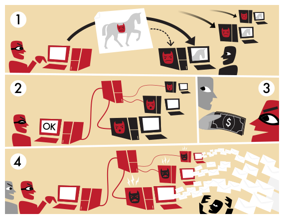

DUPLA 08 · AMEAÇA 2 DE 2
Botnet
Uma rede coordenada de dispositivos infectados, controlada por um único atacante — capaz de derrubar serviços inteiros quando age em conjunto.
O que é uma Botnet?
Botnet é a rede formada por vários bots — dispositivos infectados —, todos controlados ao mesmo tempo pelo mesmo atacante, chamado de botmaster. A ideia central é escala: um bot sozinho faz pouco, mas milhares deles agindo juntos conseguem derrubar praticamente qualquer serviço.
O botmaster emite um único comando e ele se replica para todos os dispositivos da rede simultaneamente. Isso torna ataques como o DDoS extremamente difíceis de mitigar, pois o tráfego malicioso vem de milhares de endereços IP diferentes e geograficamente distribuídos.
QUEM COMANDA
Botmaster (atacante central)
ESCALA
Dezenas a milhões de dispositivos
USOS COMUNS
DDoS, spam, fraude, cryptojacking
MODELO DE NEGÓCIO
Aluguel como serviço (booter/stresser)
Da rede de spam ao ataque global
As primeiras botnets grandes surgiram no início dos anos 2000 ligadas a campanhas de spam e fraude financeira. Com o tempo, tanto a arquitetura quanto os objetivos evoluíram consideravelmente.
2000–2005 — Botnets centralizadas
Arquitetura cliente-servidor simples: um servidor central de C2 controlava tudo. Fácil de derrubar — bastava apreender aquele servidor para desativar a rede inteira.
2007 — Storm Worm
Uma das primeiras botnets a adotar arquitetura P2P (ponto a ponto), sem um único servidor central. Tornou-se muito mais resiliente: derrubar um nó não afetava os demais.
2008–2009 — Conficker
Infectou milhões de máquinas Windows explorando uma vulnerabilidade do serviço de chamada de procedimento remoto (RPC). Usava algoritmos de geração de domínios (DGA) para dificultar o bloqueio dos servidores C2.
2016 — Mirai e a virada IoT
Demonstrou que dispositivos IoT com credenciais padrão eram alvos fáceis e abundantes. Gerou ataques DDoS recordes e teve seu código-fonte vazado, gerando dezenas de variantes ativas até hoje.
Hoje — Botnets como serviço
Botnets modernas são alugadas na dark web como "booter" ou "stresser", permitindo que qualquer pessoa sem conhecimento técnico contrate um ataque DDoS por hora ou por alvo.
Como uma botnet opera
A botnet é um sistema vivo: ela cresce continuamente e executa operações coordenadas de grande escala.

Como a botnet se expande
O crescimento de uma botnet é quase totalmente automatizado e ocorre por três caminhos principais:
VARREDURA EM MASSA
Bots já infectados varrem a internet procurando portas abertas e credenciais padrão — especialmente em dispositivos IoT sem proteção.
EXPLORAÇÃO DE CVE
Vulnerabilidades conhecidas e ainda não corrigidas são exploradas automaticamente assim que o exploit é integrado ao código do malware.
WORMS AUTORREPLICANTES
Componentes worm dentro do malware se propagam de um dispositivo vulnerável para outro sem interação humana.
Objetivos e impactos
O impacto de uma botnet é muito maior do que o de um bot isolado — e se multiplica conforme a rede cresce.
CONFIDENCIALIDADE
Roubo em escala de credenciais, dados bancários e informações corporativas coletadas de todos os dispositivos infectados.
INTEGRIDADE
Fraude de clique em anúncios, manipulação de resultados e envio de spam em massa comprometem a confiabilidade de sistemas e métricas.
DISPONIBILIDADE
Ataques DDoS com tráfego de milhares de fontes simultâneas derrubam serviços inteiros — este é o impacto mais associado a botnets.
Outros usos documentados
- Envio de spam em massa (bilhões de mensagens por dia em campanhas históricas).
- Fraude de clique em anúncios digitais, gerando lucro para o botmaster à custa dos anunciantes.
- Cryptojacking distribuído — mineração de criptomoeda usando os recursos de todos os bots simultaneamente.
- Aluguel da rede para outros criminosos como serviço de "booter/stresser" na dark web.
Como identificar atividade de botnet
Detectar uma botnet geralmente exige análise de padrões em vários dispositivos ao mesmo tempo — não só em um host isolado:
- Troca de inteligência de ameaças entre empresas de segurança — listas de IPs e domínios C2 conhecidos.
- Monitoramento de rede em busca de padrões de varredura em massa vindo de múltiplos dispositivos internos.
- Picos de tráfego saindo todos para o mesmo destino externo em curto intervalo de tempo.
- Correlação de eventos em SIEM: vários hosts apresentando o mesmo comportamento anômalo ao mesmo tempo.
- Alertas de provedor de internet sobre tráfego de saída fora do padrão da organização.
Mirai Botnet (2016)
Em agosto de 2016, surgiu a botnet Mirai, criada por um grupo de estudantes que, inicialmente, só queria derrubar servidores rivais de Minecraft com ataques DDoS. O malware varrinha a internet em busca de dispositivos IoT — câmeras, roteadores, gravadores digitais — que ainda usavam a senha padrão de fábrica. Ao encontrar um alvo, infectava e o recrutava automaticamente para a rede.
SETEMBRO 2016
Ataque ao blog de Brian Krebs: mais de 620 Gbps de tráfego — um dos maiores DDoS já registrados na época.
SETEMBRO 2016
Ataque ao provedor francês OVH com volume ainda maior, superando o recorde anterior em dias.
OUTUBRO 2016
Ataque à Dyn (DNS provider) deixou Twitter, Netflix e Reddit fora do ar para usuários em diversas regiões do mundo.
Pouco depois, o código-fonte do Mirai foi divulgado publicamente, permitindo que outros grupos criassem variantes próprias. Esse legado faz com que botnets baseadas no Mirai ainda sejam uma ameaça ativa hoje, quase uma década depois do incidente original.
O caso demonstra como dispositivos comuns de uso doméstico, quando mal configurados, podem se tornar parte involuntária de um ataque que afeta a infraestrutura global da internet.
Bot × Botnet
Os dois conceitos são complementares: um é a unidade, o outro é a rede. Entender a diferença é essencial para diagnosticar corretamente um incidente.
| Aspecto | Bot (dispositivo individual) | Botnet (rede coordenada) |
|---|---|---|
| O que é | Um dispositivo infectado e controlado remotamente | Rede de vários bots controlados juntos pelo mesmo atacante |
| Quem manda | Recebe ordens individualmente via C2 | Botmaster envia um comando que se replica para todos ao mesmo tempo |
| Escala | Impacto limitado ao próprio dispositivo | Impacto multiplicado pela quantidade de bots — pode chegar a milhões |
| Detecção | Sinal isolado naquele host (tráfego, CPU, processos) | Padrão coordenado entre vários hosts — requer análise de rede ou SIEM |
| Ataque típico | Roubo local de credenciais, spam individual | DDoS volumétrico, spam em massa, cryptojacking distribuído |
| Exemplo Mirai | Uma única câmera infectada com senha padrão | A rede completa de câmeras que derrubou a Dyn em outubro de 2016 |
Como se proteger e reagir
Prevenção — múltiplos atores
- Fabricantes: não comercializar dispositivos com senhas padrão fixas — exigir troca obrigatória na primeira configuração.
- Administradores de rede: manter firmware e software atualizados; segmentar a rede para isolar dispositivos IoT.
- Provedores de internet: implementar filtragem de tráfego anômalo próximo à origem para reduzir o volume de ataques DDoS que alcança o alvo.
- Usuários: trocar senhas padrão, desativar serviços desnecessários e monitorar o comportamento dos dispositivos.
Resposta a incidente
- Acionar um serviço de mitigação de DDoS (ex.: Cloudflare, Akamai) para absorver o tráfego malicioso antes que ele atinja a infraestrutura.
- Contatar CSIRTs e provedores de internet para filtrar o tráfego mais próximo da origem.
- Bloquear os IPs e domínios C2 identificados no perímetro da rede.
- Investigar o incidente após a contenção para identificar os dispositivos que participaram e notificar seus proprietários.
- Registrar e compartilhar indicadores de comprometimento (IoCs) com a comunidade de segurança.
Fontes consultadas
- CISA. Alert TA16-288A: Heightened DDoS Threat Posed by Mirai and Other Botnets. cisa.gov/ncas/alerts/TA16-288A
- CERT.br. Cartilha de Segurança para Internet — Fascículo Códigos Maliciosos. cartilha.cert.br/malware/
- Kaspersky. O que é uma Botnet? kaspersky.com.br
- Olhar Digital. O que é uma botnet? Veja se você faz parte de uma. olhardigital.com.br
- NAKAMURA, Emilio Tissato; GEUS, Paulo Lício de. Segurança de Redes em Ambientes Cooperativos. São Paulo: Novatec, 2007.
- TOM-B. Botnet.svg (diagrama). Wikimedia Commons, 2009. CC BY-SA 3.0 / GFDL. commons.wikimedia.org